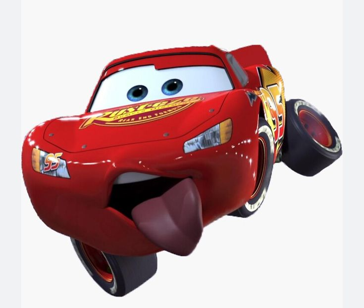

Bem-vindo ao Universo de Carros
Conheça o Relâmpago McQueen
Conheça a história do Relâmpago McQueen, um carro de corrida que aprende o valor de uma amizade verdadeira.
Prepare-se para conhecer personagens, aventuras e muitas corridas emocionantes!
Personagens Principais
Os amigos do McQueen
- mate
- Melhor amigo do McQueen
- Morador de Radiator Springs
- Sally
- Advogada e dona do hotel Cozy Cone
- Namorada de McQueen
- Doc Hudson
- Ex-campeão de corridas
- Insiraçao de McQueen
- Luigi
- Dono da loja de pneus
- Fã de corridas italianas
- Guido
- Assistente de Luigi
- Especialista em troca de pneus
Explore nosso site
veja o que vode pode encontrar por aqui:
- Conhecer a historia de carros
- Descobrir curiosidades sobre os personagens
- Consultar informacoes na pagina de dados
- Participar do nosso cadastro
Galeria de imagens
